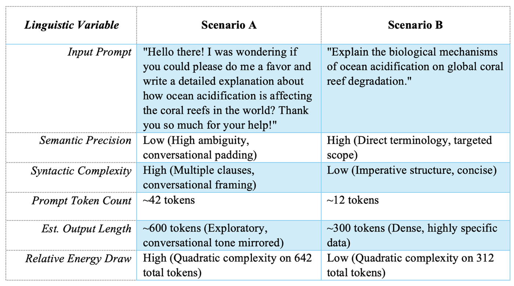

A standard Google search consumes roughly 0.3 watt-hours, enough to power a lightbulb for a few seconds. On the contrary, energy usage in generating an AI response can be up to ten times higher (Luccioni et al., 2022).
Thus, in addition to clear instructions, the energy consumed by the processes should not be overlooked in measuring prompt effectiveness in kilowatt-hours. As a result, a new linguistic paradigm emerges, called prompt engineering (Bender et al., 2021). It refers to the rules according to which humans communicate with machines and has mainly focused on the accuracy of the output so far. Nevertheless, this aspect mostly ignores the negative consequences for the environment caused by writing and human-to-machine interaction inefficiency during inference. For a proper understanding of the problem at hand, it is essential to combine pragmatics and computational processing. The linguistic structure of human-AI interaction directly correlates with the environmental impact of artificial intelligence. The environmental sustainability of Artificial Intelligence is fundamentally tied to the efficiency of human interaction, the impact of certain stylistic factors on token production, resulting in carbon emissions.
The politeness we bring to machines
The environmental impact stems from the cultural paradigm that has developed around the use of advanced technology by humans. Numerous studies in human-computer interaction over decades have found that people anthropomorphize machines unconsciously and apply sociolinguistic and social rules during conversations with non-living systems (Reeves & Nass, 1996). In the context of present-day large language models (LLMs), this psychological predisposition manifests through the practice of conversational prompting. While the use of polite forms such as “please” or “thank you” and conversational fillers is a common practice in sociolinguistic norms to maintain politeness in human interactions (Brown & Levinson, 1987), this approach introduces significant inefficiency when applied to probabilistic generators of texts.
Linguistically speaking, the cultural preference for the use of polite language forms and conversational prompts stands in direct contradiction to the idea of semantic accuracy. When the prompts include vague wording or too much context, the model is forced to cover a greater portion of the latent space when predicting the most statistically probable sequence of outputs. This semantic vagueness results in longer and more repetitive answers from the system, thus increasing the likelihood of hallucinations, semantically coherent texts, which, however, contain errors and inaccuracies (Bender et al., 2021). At the same time, the more complex syntactic structures employed in the prompts, including the abundance of subordinate clauses and the use of passive voice, require more computation to be done to parse dependencies within the text and attribute weight to the context.
Why length costs more than length
To understand how linguistic redundancy contributes to environmental degradation, one should look at the way natural language is mapped to machine logic: tokenization. Contemporary LLM architectures tokenize words, prefixes, subwords, and punctuation marks and turn them into numeric values known as tokens. Tokenization allows mapping human language to computational data. The modern dominant architectural design for LLMs involves Transformer architecture, which is based upon the mathematical concept of self-attention (Vaswani et al., 2017). With the help of self-attention, the model can assign significance to all tokens in a string relative to each other, thus establishing their contextual relationship.
Self-attention complexity is quadratic relative to the length of the text to process. Each additional conversational filler adds exponential rather than linearly increasing computational power.
This means that an increase in tokens in the input prompts and output sequences inevitably leads to more extensive use of GPUs and TPUs, increased heat generation by servers, and a corresponding increase in power consumption, ultimately expanding the model’s carbon emissions, causing climate change.
Two ways of asking the same question
The lack of efficiency in language is more apparent when comparing the prompting methods quantitatively. Let us look at two examples where hypothetical users need to receive the same core information about the consequences of ocean acidification for coral reefs from an LLM. In Scenario A, the language used by the user is greatly influenced by social behavior, the need for politeness, and semantic repetition. In Scenario B, the language used by the user is efficient and precise. The difference in computation required is illustrated below:

This difference in energy consumption in both cases might seem insignificant, perhaps, even minuscule in terms of fractions of a joule. Still, the true environmental threat is realized through the multiplier effect. Leading LLM interfaces currently serve more than 100 million daily users, generating billions of individual requests (Strubell, Ganesh, & McCallum, 2019). In case Scenario A is preferred culturally, the quadratic costs associated with processing billions of unnecessary tokens will result in huge increments in gigawatt-hours consumed per day. In contrast, adoption of Scenario B would involve nothing more than the omission of pleasantries, and this simple adjustment might potentially cut down energy costs during the inference stage in global LLMs by several percentages, thus reducing global carbon emissions by approximately 156,000 tonnes of CO2 annually without any hardware changes.
Communicating within limits
The environmental sustainability in artificial intelligence cannot only be discussed in terms of hardware or data center efficiency, but also goes hand-in-hand with human interaction efficiency, style considerations involved in creating tokens, as well as emissions generated through the inference process. Therefore, the use of language in the context of prompt design in AI is far more than an efficient use of the workflow; it represents a crucial step in reducing computational power, thus lowering the total amount of tokens needed to generate AI output and subsequently reducing the environmental cost of running AI. Ultimately, we must learn to communicate within the reality of environmental limits, ensuring that our digital dialogues do not come at the undue expense of the physical world.
References
- Bender, E. M., Gebru, T., McMillan-Major, A., & Shmitchell, S. (2021). On the Dangers of Stochastic Parrots: Can Language Models Be Too Big? Proceedings of the 2021 ACM Conference on Fairness, Accountability, and Transparency, 610–623. https://doi.org/10.1145/3442188.3445922
- Brown, P., & Levinson, S. C. (1987). Politeness: Some universals in language usage. Cambridge University Press. https://doi.org/10.1017/CBO9780511813085
- Dodge, J., Prewitt, T., des Combes, R. T., Odmark, E., Schwartz, R., Strubell, E., Luccioni, A. S., Smith, N. A., DeCario, N., & Buchanan, W. (2022). Measuring the Carbon Intensity of AI in Cloud Instances. Proceedings of the 2022 ACM Conference on Fairness, Accountability, and Transparency, 1877–1894. https://doi.org/10.1145/3531146.3533234
- Luccioni, A. S., Viguier, S., & Ligozat, A.-L. (2022). Estimating the Carbon Footprint of BLOOM, a 176B Parameter Language Model. Journal of Machine Learning Research, 24(253), 1–15. https://doi.org/10.48550/arXiv.2211.02001
- Patterson, D., Gonzalez, J., Le, Q., Liang, C., Munguia, L. M., Rothchild, D., So, D., Texier, M., & Dean, J. (2021). Carbon Emissions and Large Neural Network Training. arXiv preprint arXiv:2104.10350. https://doi.org/10.48550/arXiv.2104.10350
- Reeves, B., & Nass, C. (1996). The Media Equation: How People Treat Computers, Television, and New Media Like Real People and Places. Cambridge University Press.
- Strubell, E., Ganesh, A., & McCallum, A. (2019). Energy and Policy Considerations for Deep Learning in NLP. Proceedings of the 57th Annual Meeting of the Association for Computational Linguistics, 3645–3650. https://doi.org/10.18653/v1/P19-1355
- Vaswani, A., Shazeer, N., Parmar, N., Uszkoreit, J., Jones, L., Gomez, A. N., Kaiser, Ł., & Polosukhin, I. (2017). Attention is All You Need. Advances in Neural Information Processing Systems, 30. https://doi.org/10.48550/arXiv.1706.03762